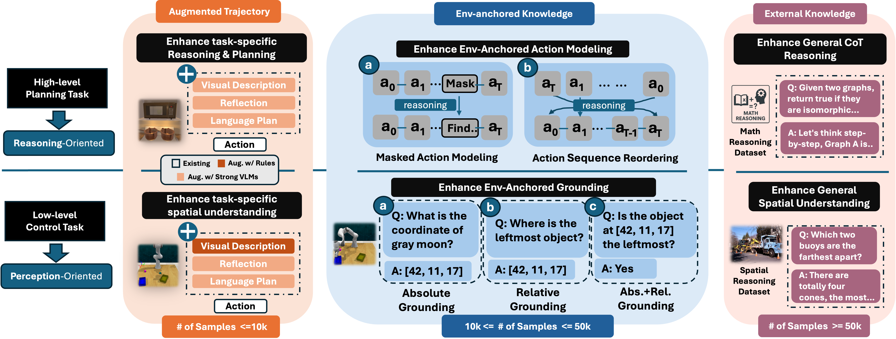
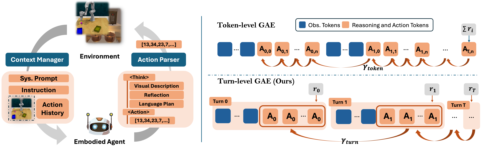
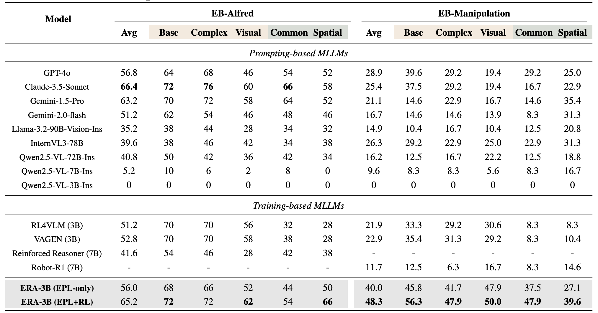
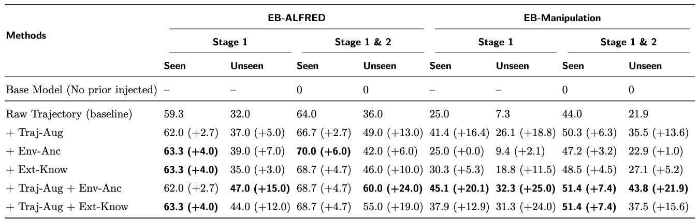
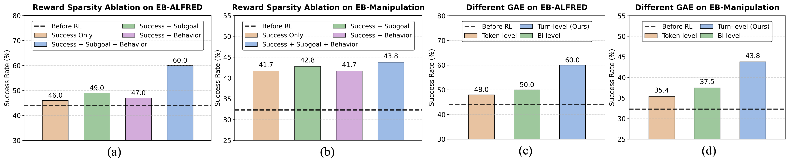
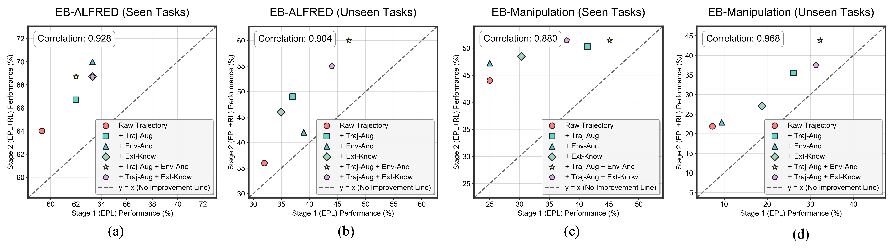
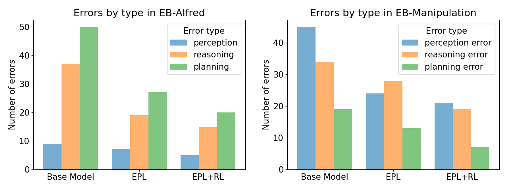

ERA: Transforming VLMs into Embodied Agents via Embodied Prior Learning and Online Reinforcement Learning
Overview of ERA

We introduce the Embodied Reasoning Agent (ERA), a framework that transforms a compact Vision Language Model (VLM) into a performant and efficient embodied agent. Unlike prior methods that are tailored for either high-level planning or low-level control in isolation, ERA studies level-agnostic problems: 1. What prior knowledge does embodied agent require before RL and 2 What make RL in long-horizon embodied task stable and effective? We distill them into a unified post-training regime that is capable of delivering both high-level planning agent and low-level control agent, by different curation of training data. This comprehensive approach not only solves level-specific tasks but also paves the way for future hierarchical policies and thus, more general embodied intelligence.
Overview of Embodied Prior Learning

The first stage, Embodied Prior Learning, distills foundational knowledge from three types of data: (1) Trajectory-Augmented Priors, which enrich existing trajectory data with structured reasoning generated by stronger models; (2) Environment-Anchored Priors, which provide in-environment knowledge and grounding supervision; and (3) External Knowledge Priors, which transfer general knowledge from out-of- environment datasets.
Agent framework & Online RL diagram

In the second stage, we develop an online RL pipeline that builds on these priors to further enhance agent performance. To overcome the inherent challenges in agent RL, including long horizons, sparse rewards, and training instability, we introduce three key designs: self-summarization for context management, dense reward shaping, and turn-level policy optimization.
Experiments


(1) Trajectory-Augmented Priors Achieve the Largest Individual Gains in Generalization.
(2) Environment-Anchored Priors Improve Seen and Unseen Tasks Equally, While External Knowledge Priors Favor Unseen Tasks.
(3) Combining Trajectory-Augmented and Environment-Anchored Priors Elicits the Best Performance.

(1) Synergistic Dense Reward Improves Long-Horizon RL.
(2) Turn-Level Value Estimation Enhances Policy Learning.

Performance Correlation between EPL and RL. A strong Pearson correlation (0.88-0.97) between EPL and RL performance shows that stronger prior learning consistently predicts better RL outcomes, emphasizing the pivotal role of robust Embodied Prior Learning.
Error Analysis
In this section, to understand how the EPL and RL stages in ERA reduce different types of errors, we conduct an error analysis on unseen subsets of both the high-level planning task EB-ALFRED (100 tasks) and the low-level control task EB-Manipulation (98 tasks).
We categorize errors into three types: (i) Perception errors: incorrect descriptions of the current state; (ii) Reasoning errors: mistakes in reasoning about the current state or reflecting on history; and (iii) Planning errors: mistakes in planning future steps.
The results, shown in Figure 6, reveal distinct patterns across task levels. In high-level tasks, reasoning and planning errors are dominant, while in low-level tasks, perception and reasoning errors are more prevalent. Across both settings, EPL and RL consistently reduce errors, but their effects differ in granularity: EPL contributes to reducing all error types, whereas RL is especially effective at lowering reasoning and planning errors. When combined, EPL and RL (i.e., ERA) achieve the lowest error rates across all categories.

Case Study
Success Examples
 (1)-3.png)
Figure 6. Planning example of EPL only and ERA (EPL + RL) in EB-Manipulation.
 (1)-6.png)
Figure 7. Planning example of EPL only and ERA (EPL + RL) in EB-ALFRED.
Failure Examples
 (1)-2.png)
Figure 8. Reflection Error Example in EB-Manipulation. ERA successfully identified the correct target object: the azure triangular prism, while EPL mistakenly selected the yellow cube.
 (1)-5.png)
Figure 9. Planning Error Example in EB-ALFRED. ERA successfully identified the second spray bottle as SprayBottle 2 while EPL repeatedly located the same SprayBottle.
BibTeX
@article{chen2025era,
title={ERA: Transforming VLMs into Embodied Agents via Embodied Prior Learning and Online Reinforcement Learning},
author={Chen, Hanyang and Zhao, Mark and Yang, Rui and Ma, Qinwei and Yang, Ke and Yao, Jiarui and Wang, Kangrui and Bai, Hao and Wang, Zhenhailong and Pan, Rui and Zhang, Mengchao and Barreiros, Jose and Onol, Aykut and Zhai, ChengXiang and Ji, Heng and Li, Manling and Zhang, Huan and Zhang, Tong},
year={2025}
}